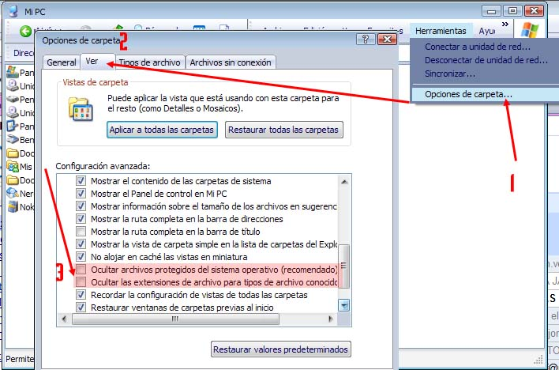

Tips
para el manejo apropiado de imágenes web |
| Este es quizas el módulo de ayuda más importante de todo el sistema. Por favor apague su celular y desconéctese del msn por 30 minutos y lea esta ayuda lo más detenidamente posible Le será de gran utilidad aprender lo que aqui se expone. |
| Entendiendo el manejo de archivos en su computadora |
1.- Las imágenes o cualquier archivo que usted desee colocar en su Web Site deben tener ciertos parámetros para su correcta visualización y para evitar problemas que le serán difíciles de detectar. Procure:
"camisa marrón para niñas
.JPG" NO 2.- Para cambiar el nombre de un archivo tan solo ubíquelo en el Explorador de Windows haga UN click sobre el nombre del mismo y luego haga click otra vez, inmediatamente el nombre se convertirá en editable. Proceda modificar sus archivos de la manera que crea conveniente, siguiendo las sugerencias anteriores. Es Muy importante saber qué extension tienen su archivos, esto le dice que tipo de archivo es; la mayoría de las veces basta con el iconito, pero este NO es el caso. Para poder ver las extensiones de los archivos ( .JPG, . GIF, .PNG, ETC) haga lo siguiente:
 Inmediatamente usted podrá ver que extensiones tienen los archivos que usted maneja. 3.- No todos los tipos de archivos son adecuados para la web. Procure Utilizar siempre archivos JPG o GIF, sobre todo si son fotos. No use archivos PNG, BMP, TIF, TGA, DOC, PPT (estos dos últimos NO son imágenes) ya que o son innecesariamente pesados o no son compatibles con el formato WEB. Recuerde que mientras menos pesen las imágenes, mejor para su servidor y sus usuarios, ya que la página cargará más rápido. 4.- Para saber el peso de sus archivos: a.- en la barra del explorador, busque el menú "ver" y seleccione
" detalles. Inmediatamente usted podrá ver una lista de detalles del archivo entre las cuales se cneuntra el Tamaño
en Kbytes del mismo.
Por lo general sus imágenes NO deberían pesar más de 100 K. si usted ve alguna imagen de más de 300 K, usted debe reducir el tamaño de la misma. Para que tenga una idea, un CD ROM tiene una capacidad de 700 MEGA Bytes. Un Mega byte son 1024 Kilo bytes. Una Imagen de 1 MEGA Byte debería ser algo como esto. ASI DE GRANDE es una imágen de 1 Mega!!.. Si usted No necesita una imagen tan grande, usted NO debe subir a su Web site la imágen en ese tamaño. el manejar imágenes innecesariamente grandes solo le quitará tiempo y agregará furstración a todas sus operaciones. Esta Imágen pesa 50 K! El peso o Tamaño de una imágen lo dan básicamente 4 factores:
Editando las Imágenes Ahora la pregunta ¿ y cómo le cambio el tamaño a mis imágenes?. OLVÍDESE de PowerPoint, Word, Excel, el Visor de imágenes de windows, Picasa, el software de su cámara de fotos, Etc. Esos programas NO son para modificar imágenes, si acaso son para ordenarlas. Usted necesita un EDITOR de Imágenes. No importa cuan sencillo sea, éste debe tener las funciones básicas: Cambiar de Tamaño, Cambiar de Resolución y Recortar. Le proveemos de un sencillo y gratuito editor de Imágenesk, libre de Virus y Spyware, llamado FREE IMAGE EDITOR para que usted descargue e Instale: Editor
de Imágenes 1.- Instale el software y abra la imagen que desea o necesita modificar con el mismo... 2.- Para modificar el tamaño y resolución de su imagen, busque el menú "Raster" y seleccione la opción "Resample". Si su archivo tiene una resolución mayor a 72 dpi este tendra un peso mayor innecesario. Entonces, primero cambie la resolución a 72 dpi y luego seleccione el ancho que desea. (si usted va a subir una imagen pequeña para un catálogo de productos, por ejemplo, hágala de 250 píxeles de ancho, si va a subir una imagen grande, hágala de 800 píxeles de ancho). Imágenes de más de 1024 píxeles son inutilmente grandes y pesadas. ASEGÚRESE DE COLOCAR EL ZOOM A UN NIVEL DE 100% PARA VER EL TAMAÑO REAL DE SU IMAGEN ORIGINAL. Al abrir la imagen en el editor podrá ver en la barra
superior de la ventana los datos necesarios de su imagen: nombre, tamaño profundidad y resolución en dpi.
Al modificar el tamaño usted verá el resultado inmediatamente y obtendrá una imagen manejable y fácil
de transferir a su servidor.
3.- Guarde la imagen con un nombre adecuado,
considerando las sugerencias hechas al comienzo de este documento.
Antes de guardar Presione el botón "Avanzados" y asegúrese
que la compresión sea entre el 50% y el 70% (mientras mayor porcentaje, MAYOR será el tamaño de la imágen;
por lo general 50% es suficiente y adecuado) Usted obtendrá una imagen lista para poder ser trabajda en su página web. Asegúrese de conservar los archivos originales en otra carpeta. confundirse es muy fácil, sobre todo cuando la cantidad de imágenes es grande. Sólo el tener orden y método le salvará de perderse en la tarea y cometer errores incómodos. |